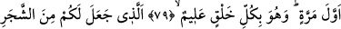

ONLARI İLK DEFA
YARATMIŞ OLAN DİRİLTECEK
74. Onlar, yardım göreceklerini umarak Allah’tan başka ilâhlar edindiler.
75. Halbuki ilâhlarının onlara yardım etmeye güçleri yetmez. Aksine kendileri
bunlar için yardıma hazır askerlerdir.
76. (Rasûlüm!) O halde onların sözleri sakın seni üzmesin. Şüphesiz biz, onların
gizlemekte olduklarını da, açığa vurduklarını da biliyoruz.
77. İnsan görmez mi ki, biz onu meniden yarattık. Bir de bakıyorsun ki, apaçık
düşman kesilmiş.
78. Kendi yaratılışını unutarak bize karşı misal getirmeye kalkışıyor ve: “Şu
çürümüş kemikleri kim diriltecek?” diyor.
79. De ki: Onları ilk defa yaratmış olan diriltecek. Çünkü O, her türlü yaratmayı
gayet iyi bilir.
80. Yeşil ağaçtan sizin için ateş çıkaran O’dur. İşte siz ateşi ondan yakıyorsunuz.
81. Gökleri ve yeri yaratan, onların benzerlerini yaratmaya kadir değil midir?
Evet! Elbette kadirdir. O, her şeyi hakkıyla bilen yaratıcıdır.
82. Bir şey yaratmak istediği zaman Onun yaptığı “Ol” demekten ibarettir.
Hemen oluverir.
83. Her şeyin mülkü kendi elinde olan Allah’ın şanı ne kadar yücedir! Siz de
O’na döneceksiniz.